№ 05 / 07 — Фотография
Фотоработы

О проекте
Повседневность, увиденная как кадр из фильма: свет в подземном переходе, чайки на пустом берегу, красная комната, вечерние окна.
Фотографии — продолжение режиссёрского взгляда. Каждый снимок выстроен как стоп-кадр из фильма, который ещё не снят: одинокая фигура у воды, красное пятно в раковине, книга, раскрытая на столе кафе, комната, залитая красным светом.
Серия держится на свете: тёплом, жёлтом — в переходах, на кухнях, в ночных окнах — и холодном, сумеречном — на улицах и у воды. В портретах у окна — та же тема, что и во всех работах: взгляд, отражение, стекло между человеком и миром.
Двадцать четыре кадра — ровно одна секунда плёнки.
Серия
24 кадра
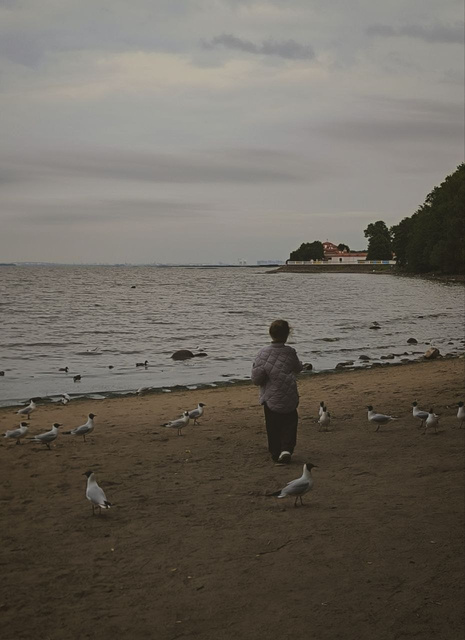
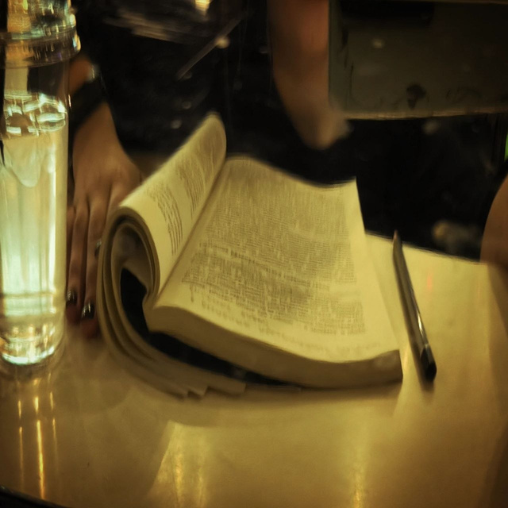
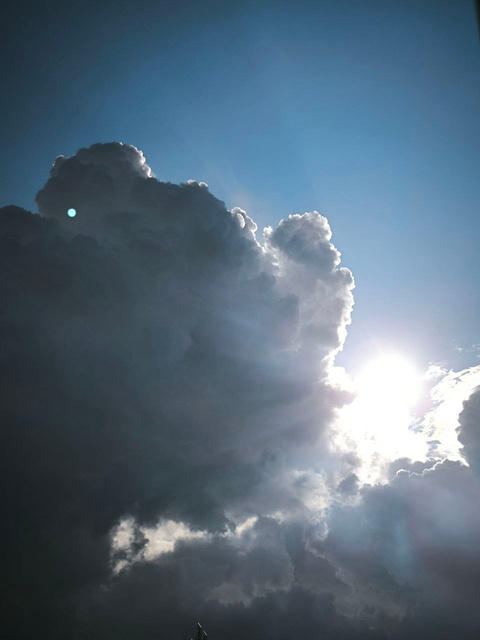
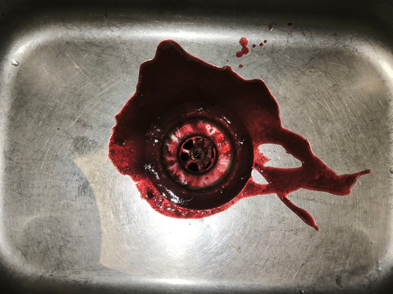
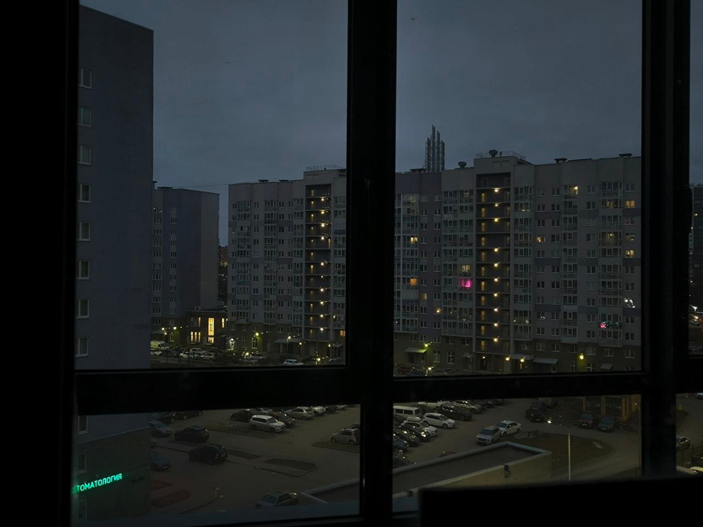
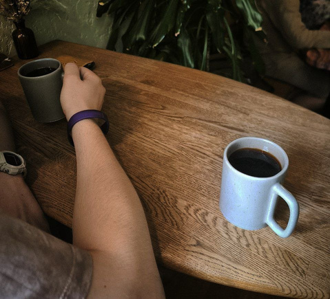
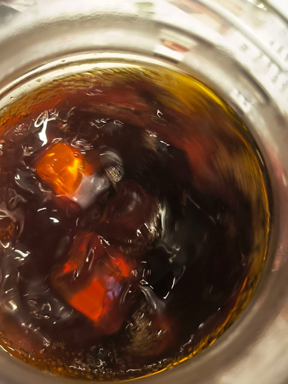
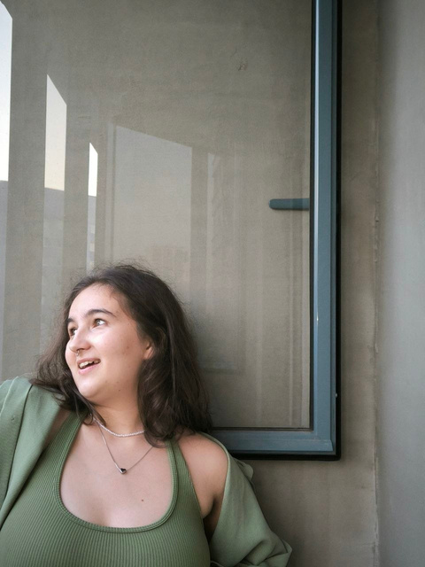
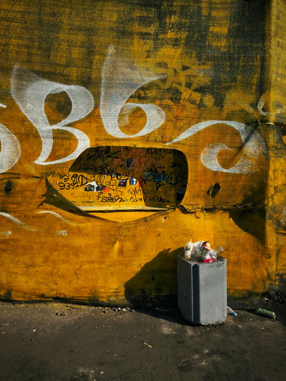
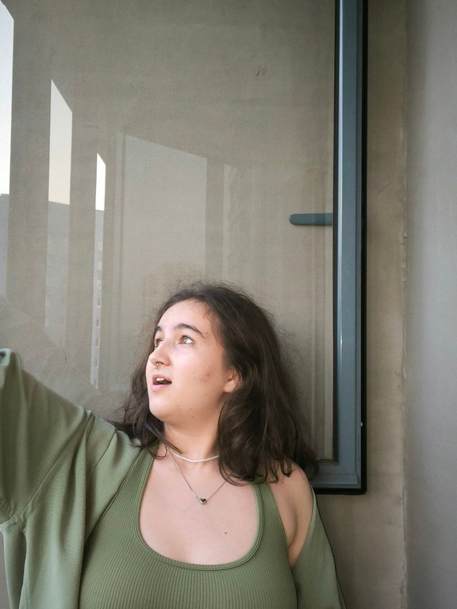
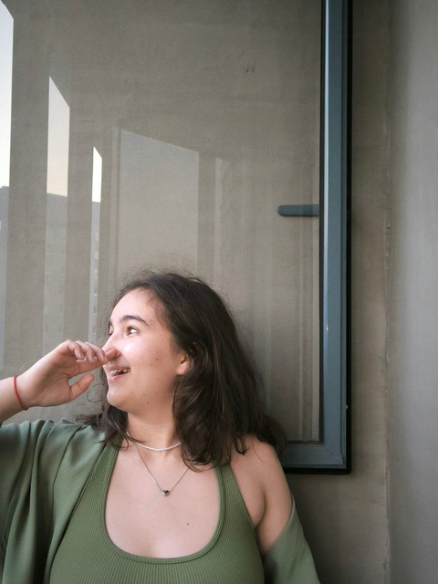
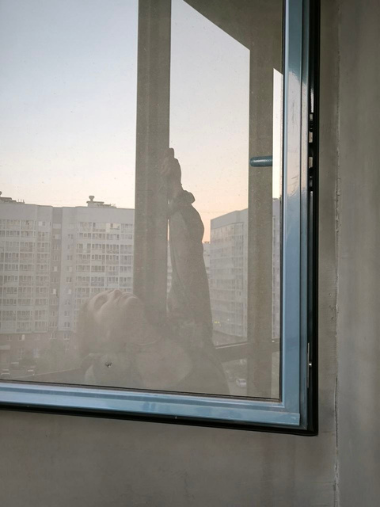
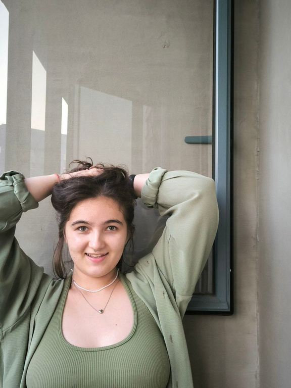
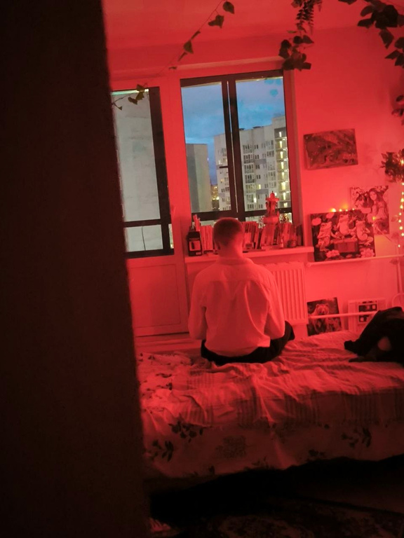
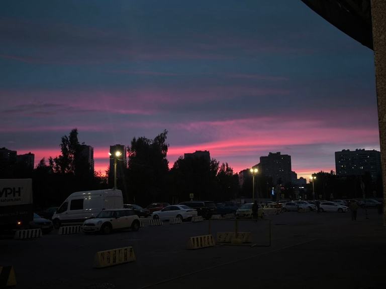
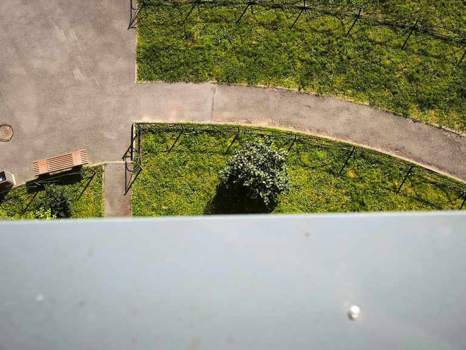
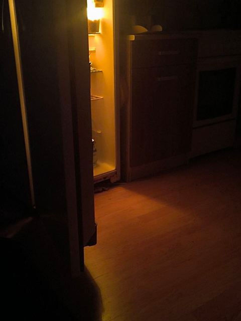
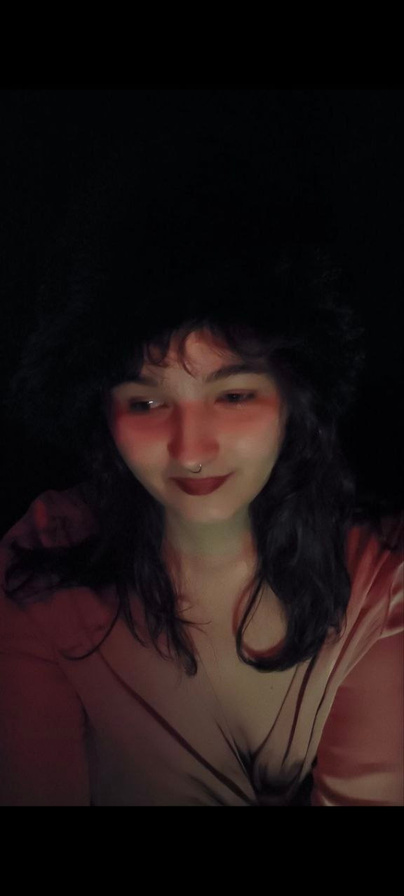
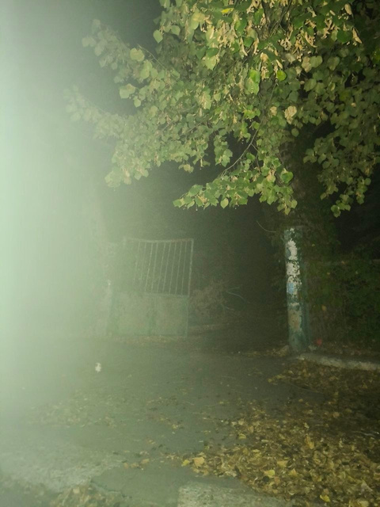
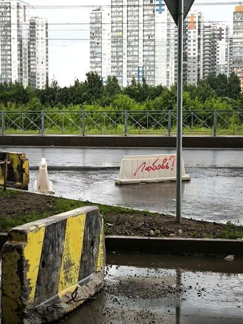
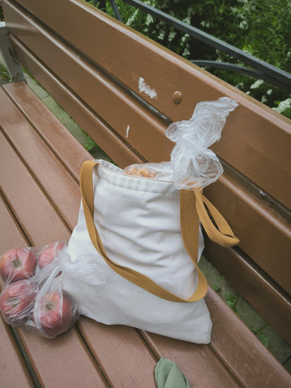
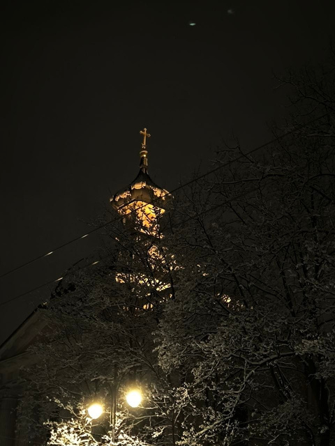
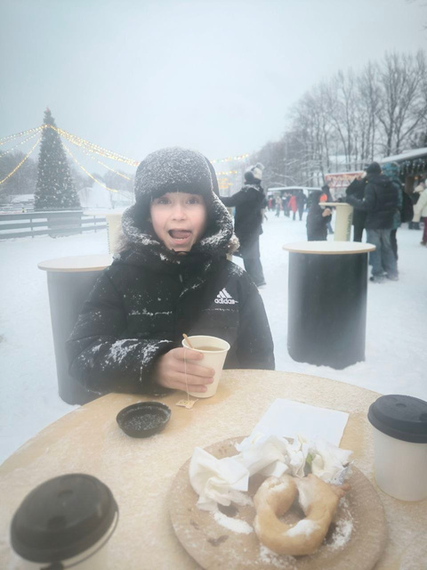